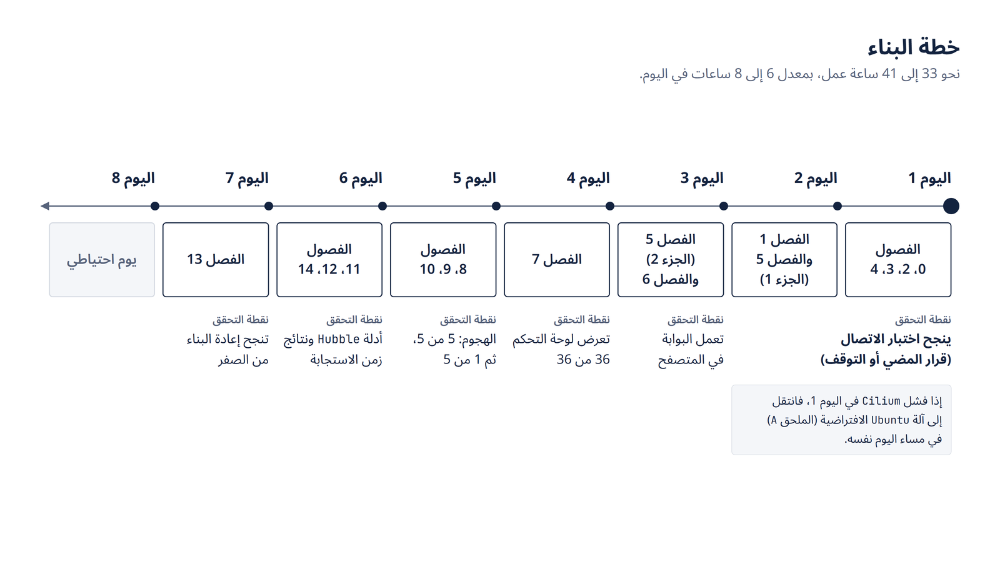

الفصل 0. كيف نستخدم هذا الدليل
ينقلنا هذا الدليل من حاسوب محمول عادي يعمل بنظام Windows إلى مختبر عامل للتجزئة الدقيقة للشبكة (Micro-segmentation)، مع نتائج مقيسة والأدلة التي يحتاجها بحث التخرج. سنبني المختبر من دون أحد نرجع إليه، لذلك تذكر كل خطوة ما نكتبه وما يجب أن يظهر على الشاشة، وتعطي الحل للأخطاء التي يُرجَّح أن نصادفها. نقرأ هذا الفصل قبل غيره. يستغرق نحو 15 دقيقة، وينتهي بخطوة حقيقية نتحقق فيها من أنّ الحاسوب يتسع للمختبر.
ماذا نبني، وبأي ترتيب
نبني موقعاً جامعياً اسمه «بوابة الحرم الجامعي» (Campus Portal) من ست خدمات صغيرة تعمل على Kubernetes، وهو نظام يشغّل البرامج على عدة أجهزة ويُبقيها عاملة. وكل هذه الأجهزة محاكاة داخل الحاسوب المحمول نفسه. نهاجم البوابة أولاً كما يفعل متسلل حقيقي، فيصل الهجوم إلى قاعدة بيانات الدرجات وإلى لوحة الإدارة. ثم نضيف سياسات الشبكة (network policies) في Cilium، وهي قواعد تحدد من يحق له أن يتحدث إلى من، ونعيد الهجوم نفسه. هذه المرة يتوقف بعد الخطوة الأولى. ونتيجة بحث التخرج هي الفرق المقيس بين هاتين المحاولتين.


يعرض الشكل 8 خطة البناء. نهاجم الشبكة المسطحة (flat network) في الفصل 8، قبل أن يضيف الفصل 10 أي سياسة، فتبقى لدينا دائماً نتيجة «قبل» نقارن بها.
يستغرق البناء كله نحو 33 إلى 41 ساعة. بمعدل 6 إلى 8 ساعات يومياً يعني ذلك سبعة أيام عمل ويوماً احتياطياً، أما بمعدل 3 إلى 4 ساعات يومياً فيستغرق قرابة الضعف. والخطة يوماً بيوم في الفصل 15.
لن نقرأ الفصول بترتيبها الحرفي. في اليوم الأول نقرأ هذا الفصل، ثم ننجز الفصول 2 و3 و4. الفصل 4 هو الذي يخبرنا هل يعمل Cilium على هذا الحاسوب، وهذا أهم ما نحتاج إلى معرفته في أبكر وقت ممكن. بمعدل 6 إلى 8 ساعات يومياً نعرف الجواب مساء اليوم الأول، وبمعدل 3 إلى 4 ساعات نعرفه في نهاية اليوم الثاني. وإذا رفض Cilium العمل فالملحق A ينقل المختبر إلى آلة افتراضية تعمل بنظام Ubuntu، أي حاسوب مُحاكى يعمل داخل الحاسوب الحقيقي، ويبقى باقي الدليل صالحاً. أما الفصل 1، وهو المختبر على الورق، فموعده اليوم الثاني. وإذا أوقفتنا كلمة في الفصول 2 إلى 4 نبحث عنها في المسرد في الملحق D.
يتألف الدليل من الفصول 0 إلى 15، وهي مسرودة في جدول متابعة التقدم قرب آخر هذا الفصل، ومن الملاحق A إلى D. الملحق A هو خطة الآلة الافتراضية، والملحق B بطاقة الأوامر في صفحة واحدة، والملحق C فهرس لكل ملفات المشروع مع الفصل الذي يبني كل ملف، والملحق D مسرد المصطلحات.
Windows وUbuntu ونوعا الأوامر
الطرفية نافذة نكتب فيها الأوامر بدل النقر بالفأرة. تعرض موجّه الأوامر، وهو سطر قصير معناه «جاهز، اكتب الأمر التالي». سنستخدم طرفيتين اثنتين.
طرفية Windows هي PowerShell. لفتحها نضغط مفتاح Windows ونكتب powershell ثم ننقر Windows PowerShell. ينتهي موجّهها بالرمز > ويبدو هكذا، ويظهر فيه اسم مجلد المستخدم على حاسوبنا مكان Sara.
PS C:\Users\Sara>أما Ubuntu فإصدار من Linux، وWSL (Windows Subsystem for Linux) هو الجزء من Windows الذي يشغّله إلى جانب برامج Windows. نثبّت الاثنين في الفصل 2، وهو يبيّن أيضاً كيف نفتح طرفية Ubuntu. ينتهي موجّهها بالرمز $ ويبدو هكذا، وفيه اسم مستخدم Linux واسم الحاسوب.
sara@LAPTOP-1234:~$يعمل المشروع كله تقريباً داخل Ubuntu، لأنّ كلاً من Docker والعنقود (cluster) المُحاكى وCilium يحتاج إلى نواة Linux (kernel)، أي قلب نظام التشغيل، لتعمل عليها.
كل أمر في هذا الدليل يذكر مرتين النافذة التي يُكتب فيها. الجملة التي تسبقه تسمّي النافذة، مثل «في PowerShell نشغّل» أو «في طرفية Ubuntu نشغّل»، وتحمل كتلة الشيفرة كلمة صغيرة في زاويتها العليا. الكتلة التي تحمل الكلمة powershell تُكتب في PowerShell. والتي تحمل bash تُكتب في طرفية Ubuntu، لأنّ bash هو البرنامج الذي يقرأ ما نكتبه هناك. أما الكتلة التي تحمل text فليست أمراً أبداً. فيها شيء نقرؤه أو نقارن به، كالمخرجات، أو ملف أو رسالة تطلب الخطوة نسخها إلى مكان ما.
نلصق كتلة واحدة في كل مرة. في PowerShell نلصق بالمفتاحين Ctrl+V. أما في طرفية Ubuntu فنلصق بالمفاتيح Ctrl+Shift+V، لأنّ Ctrl+V تعني شيئاً آخر في طرفيات Linux. بعد اللصق نضغط Enter إذا لم يبدأ الأمر من تلقاء نفسه. وإذا ظهر تحذير يقول إنّ النص يحتوي على عدة أسطر ننقر Paste anyway. ثم ننتظر حتى يعود موجّه الأوامر قبل أن نلصق الكتلة التالية. بعض الأوامر يبقى يعمل حتى نوقفه، والخطوة تنبّه إلى ذلك حين يحدث. ولإيقاف أمر كهذا واستعادة موجّه الأوامر نضغط Ctrl+C في تلك النافذة.
كيف تُعرض الخطوة
لكل خطوة في الفصول 2 إلى 14 الأجزاء الخمسة نفسها، وبالترتيب نفسه دائماً.
- الغرض من الخطوة، في جملة أو جملتين. نقرأ هذا الجزء حتى حين نكون مستعجلين، لأنّ معرفة الغرض من الخطوة تدلّنا على مكان البحث حين يتعطل شيء لاحقاً.
- الأمر أو الملف، داخل كتلة شيفرة رمادية. وحين تعطينا الخطوة ملفاً كاملاً، تذكر الجملة التي قبل الكتلة مسار الملف داخل مجلد المشروع.
- عمل كل جزء. في الأمر يُشرح كل جزء منه تحت الكتلة. وفي الملف تشرح ملاحظات مرقّمة مثل (1) و(2) تحت الكتلة الأسطرَ التي تحتاج إلى شرح.
- كتلة بعنوان ما يجب أن نراه، فيها المخرجات الحقيقية التي طبعها الأمر حين اختُبر هذا الدليل، وبعدها جملة تسمّي السطر الذي يجب أن يطابق ما على الشاشة تماماً.
- كتلة بعنوان إذا ظهر شيء آخر، فيها الإخفاقان أو الإخفاقات الثلاثة الأكثر احتمالاً في تلك الخطوة. يعرض كل إخفاق نص الخطأ كما هو، ويذكر سببه وطريقة إصلاحه.
ينتهي كل فصل من فصول البناء بنقطة تحقق وأمر git commit. نقطة التحقق فحص قصير، وغالباً ما تكون أمراً واحداً. السطر أو الأسطر التي تسمّيها يجب أن تطابق الدليل تماماً، أما الأجزاء التي يقول الدليل إنها ستتغير، مثل أسماء Pods وأعمارها وعناوين IP، فلا تُحسب. وGit برنامج يحتفظ بلقطات من مجلد المشروع، والإيداع لقطة واحدة محفوظة، فنستطيع بعد كل فصل أن نرجع دائماً إلى آخر حالة كانت تعمل. نُعدّ Git في الفصل 2.
العناصر النائبة: كلمات بين قوسين زاويين
تحتوي بعض الأوامر على عنصر نائب، وهو كلمة بين قوسين زاويين مثل <WinUser>، تنوب عن قيمة لا يعرفها غيرنا. نستبدل العنصر النائب كله، مع القوسين، بقيمتنا. وكل ما خارج القوسين الزاويين يُكتب كما هو تماماً، بما في ذلك المسافات والأحرف الكبيرة.
يعني العنصر <WinUser> اسم مجلد المستخدم تحت C:\Users، وهو ليس دائماً الاسم الذي يرحّب بنا به Windows. فإذا أُعدّ Windows بحساب Microsoft يأخذ المجلد غالباً اسماً مختصراً. لمعرفته نشغّل هذا الأمر في PowerShell.
$env:USERPROFILEC:\Users\ASUSهذا هو المجلد على الحاسوب الذي اختُبر عليه الدليل. على حاسوبنا يُطبع سطر مثل C:\Users\sarak، والجزء الذي بعد آخر شرطة مائلة عكسية، وهو هنا sarak، هو قيمة <WinUser> لدينا. فيصبح المسار /mnt/c/Users/<WinUser>/Downloads عندها /mnt/c/Users/sarak/Downloads.
ملفات نلصقها وملفات نكتبها
نلصق معظم ملفات المشروع كاملة ثم نراجعها. لكنّ ثلاث قطع نكتبها بأيدينا، لأنّ الكتابة تجبرنا على قراءة كل سطر. هذه القطع هي الملف k8s/policies/1-baseline.yaml، وسياسة api داخل k8s/policies/2-allow.yaml، والدالة check_image في apps/news.py. والفصل الذي يبني كل واحدة منها يخبرنا متى نبدأ الكتابة.
ننسخ من صفحة Docs لا من ملف PDF
ننسخ الأوامر والملفات من صفحة Docs الخاصة بهذا الدليل على الإنترنت، أي الصفحة التي وصلنا رابطها، أو من نسخة .docx ننزّلها عبر خيار التصدير في تلك الصفحة. لا ننسخ من ملف PDF أبداً. كثيراً ما يحوّل ملف PDF علامات الاقتباس المستقيمة إلى علامات منحنية، ويُسقط المسافات أو يدمجها، فيفشل الأمر المنسوخ منه بخطأ يبدو بلا أي علاقة بما لصقناه. وإذا لم يكن لدينا إلا ملف PDF فنطلب رابط الصفحة ممن أعطانا الدليل قبل أن نبدأ الفصل 2.
حين لا تطابق المخرجات ما في الدليل
لن تطابق شاشتنا الدليل حرفاً بحرف، وهذا غير مطلوب أصلاً. بعض الأجزاء يتغير في كل تشغيل، والنص الذي تحت المخرجات في كل خطوة يسمّيها. فأسماء Pods تنتهي بأحرف عشوائية مختلفة، وعناوين IP والتواريخ والأوقات عندنا ستختلف عمّا في الدليل. وحين لا يتطابق شيء نمرّ على هذه القائمة بالترتيب.
- نتجاهل الأجزاء التي يقول الدليل إنها ستتغير. ونقارن كل ما سواها، وأهمها السطر الذي يسمّيه نص «ما يجب أن نراه»، مثل
PORTAL: 6/6 OK. - إذا اختلف ذلك السطر، أو ظهر خطأ، نبحث عن السطر الذي يسمّي الخطأ. تضعه Python في آخر سطر من رسالتها، أما معظم الأدوات الأخرى فتضعه قرب البداية. ثم نبحث عن ذلك النص بعينه في كتلة «إذا ظهر شيء آخر» في تلك الخطوة.
- إذا لم نجده هناك ننتقل إلى الفصل 13. فيه جدول للأعراض وحلولها بُني من كل خطأ ظهر أثناء اختبار هذا الدليل، ومعه طريقة لتحديد الطبقة المعطّلة.
- إذا غيّرنا ملفات منذ آخر إيداع، يعرض
git diffما تغيّر في الملفات التي يتتبعها Git أصلاً، ويعيدgit restore <file>مثل هذا الملف إلى حاله عند آخر إيداع، بشرط ألا نكون قد شغّلناgit addبعد ذلك. يشرح الفصل 2 الأمرين. - لا نعيد البناء من الصفر إلا في آخر المطاف. يبيّن الفصل 13 طريقة ذلك.
قاعدة واحدة
لا نبدأ الفصل التالي في ترتيب قراءتنا قبل أن تتطابق نقطة التحقق في الفصل الحالي. كل فصل يُبنى على الذي قبله، والمشكلة التي نحملها معنا كثيراً ما تظهر بعد فصلين على هيئة خطأ يشير إلى مكان آخر تماماً. فإذا اكتُشف الاختلاف عند نقطة التحقق فإصلاحه يستغرق عادة بضع دقائق، لكنه إذا لم يظهر إلا في الفصل 10 فقد يكلّفنا يوماً كاملاً.
خطوة تدريبية: نتحقق من أنّ الحاسوب قادر على تشغيل المختبر
يشغّل المختبر في وقت واحد ثلاثة أجهزة مُحاكاة، والبرامج السبعة التي تتكون منها البوابة (الخدمات الست وبرنامجاً مساعداً صغيراً)، وCilium. في الفصل 3 نعطي WSL، وهو الآلة الافتراضية التي يعمل فيها Ubuntu، نحو 10 GB من الذاكرة و4 معالجات. الحاسوب الأصغر من ذلك لا يقدر على تشغيله، ومن الأفضل أن نكتشف ذلك اليوم لا في منتصف اليوم الثاني. وهذه أيضاً أول خطوة مكتوبة بالأجزاء الخمسة، لذلك نقرؤها كاملة مرة واحدة قبل أن نكتب أي شيء.
في PowerShell نشغّل هذا الأمر لنعرف حجم الذاكرة في الحاسوب.
[math]::Round((Get-CimInstance Win32_ComputerSystem).TotalPhysicalMemory / 1GB, 1)الجزء Get-CimInstance Win32_ComputerSystem يطلب من Windows معلومات عن الحاسوب. والجزء .TotalPhysicalMemory يختار منها حجم الذاكرة، ويعطيه Windows بالبايت. أما / 1GB فيحوّل البايتات إلى غيغابايت. ويقرّب الجزء [math]::Round( مع , 1) الذي يختم الأمر الجوابَ إلى منزلة عشرية واحدة.
ما يجب أن نراه رقم واحد في سطر واحد.
15.9هذه القيمة من الحاسوب الذي اختُبر عليه الدليل. يجب أن يكون الرقم عندنا 13.5 أو أكثر. والحاسوب الذي يُباع بذاكرة 16 GB يطبع رقماً أقل من 16 بقليل، لأنّ شريحة الرسوميات والبرنامج الثابت (firmware) يحجزان جزءاً من الذاكرة لنفسيهما.
نعدّ الآن المعالجات. في PowerShell نشغّل هذا الأمر.
(Get-CimInstance Win32_ComputerSystem).NumberOfLogicalProcessorsيعدّ NumberOfLogicalProcessors خيوط المعالجة التي يستطيع Windows أن يوزّع العمل عليها. ويرى Ubuntu عدداً من النوع نفسه على أنه عدد وحدات المعالجة (CPUs) لديه.
ما يجب أن نراه عدد صحيح واحد.
12الأرجح أن يختلف العدد عندنا عن عدد حاسوب الاختبار. يجب أن يكون 4 أو أكثر.
وأخيراً نتحقق من المساحة الحرة على القرص، وهذا لا يحتاج إلى أمر. نضغط Windows+E لفتح مستكشف الملفات (File Explorer) وننقر This PC في اللوحة اليسرى. تحت «Devices and drives» يعرض القرص المعلَّم (C:) سطراً مثل «120 GB free of 476 GB». نحتاج إلى 30 GB حرة على الأقل. فنظام Ubuntu وDocker والأجهزة المُحاكاة الثلاثة وكل صورة حاوية (أي البرامج المعبّأة التي ينزّلها المختبر ويبنيها) تقيم كلها على القرص C:، والملف الذي يحمل قرص Ubuntu كله يكبر مع العمل لكنه لا يصغر من تلقاء نفسه.
إذا ظهر شيء آخر
'[math]::Round' is not recognized as an internal or external command,
operable program or batch file..NumberOfLogicalProcessors was unexpected at this time.إذا ظهرت إحدى هاتين الرسالتين فقد كتبنا الأمر في Command Prompt، وهي طرفية Windows السوداء الأقدم التي لا تفهم أوامر PowerShell. الرسالة الأولى من أمر الذاكرة، والثانية من أمر المعالجات. نغلق Command Prompt، ونفتح Windows PowerShell كما وصفنا سابقاً، ثم نشغّل الأمر من جديد.
إذا كان رقم الذاكرة أقل من 13.5، مثل 7.9 أو 11.8، فمعناه أنّ في الحاسوب 8 GB أو 12 GB من الذاكرة، ولن يتسع العنقود إلى جانب Windows. نستخدم حاسوباً فيه 16 GB أو أكثر، أو نضيف إليه ذاكرة، قبل أن نمضي أبعد من ذلك.
إذا كانت المساحة الحرة على القرص C: أقل من 30 GB، نفرغ سلة المحذوفات (Recycle Bin) أولاً. ثم نفتح Settings > System > Storage > Temporary files، ونحدد كل شيء ما عدا Downloads، وننقر Remove files. وإن لم يكفِ ذلك ننقل الملفات الشخصية الكبيرة، كمقاطع الفيديو، إلى قرص آخر أو إلى ذاكرة USB، ثم نفحص This PC من جديد.
وإذا كان عدد المعالجات أقل من 4 فلا يمكن تشغيل المختبر على هذا الحاسوب أصلاً. عندها نحتاج إلى جهاز آخر.
أما الشرط الأخير، وهو أن تكون المحاكاة الافتراضية (virtualization) مفعّلة، فيفحصه الفصل 2.
الإصدارات المختبَرة
اختُبر الدليل في 19 تشرين الثاني 2026 بالإصدارات الواردة أدناه. يواصل WSL وUbuntu وDocker Engine إصدار التحديثات، فقد نحصل على إصدار أحدث قليلاً مما في الجدول، ولا بأس بذلك ما دام check-env.sh في الفصل 3 ينجح. أما كل شيء من kind نزولاً إلى أداة hubble، ومعه حزم Python، فيُثبَّت برقم إصدار محدد. وأداة سطر الأوامر (CLI) برنامج نشغّله بكتابة اسمه في الطرفية. يجب أن تطابق هذه الإصدارات الجدول حتى لو صدر ما هو أحدث منها، لأنّ الإصدار الأحدث يعطّل هذا المختبر. تشغّل kind كل جهاز مُحاكى انطلاقاً من صورة عقدة، وهي النظام المعبّأ الذي يُقلع منه الجهاز. وصورة العقدة التي تستخدمها kind تلقائياً، ما لم نحدد غيرها، تحمل Kubernetes 1.37، وهو إصدار لا يدعمه Cilium 1.20. كذلك تثبّت أداة cilium الإصدار 1.20.3 من Cilium ما لم نطلب 1.20.5. والأوامر في الفصلين 3 و4 تذكر الإصدار الدقيق في كل مرة.
| المكوّن | الإصدار | ما هو | أين يُثبَّت |
|---|---|---|---|
| Windows | 11 (استُخدم إصدار Pro في الاختبار، ويعمل WSL على Home أيضاً) | نظام تشغيل الحاسوب | موجود مسبقاً |
| WSL | 3.0.5، والنواة 6.18.58.1-microsoft-standard-WSL2 | يشغّل Linux داخل Windows | الفصل 2 |
| Ubuntu | 24.04.5 LTS | نظام Linux الذي نعمل فيه | الفصل 2 |
| Docker Engine | 29.10.0 (من مستودع apt التابع لشركة Docker، لا Docker Desktop) | يبني الصور ويشغّل الحاويات | الفصل 3 |
| kind | v0.33.0، وصورة العقدة kindest/node:v1.36.4 |
تشغّل عنقود Kubernetes على هيئة حاويات Docker | الفصل 3 |
| kubectl | v1.36.6 | الأمر الذي نخاطب به Kubernetes | الفصل 3 |
| cilium CLI | v0.20.3 (إصدار Cilium الافتراضي فيها 1.20.3، لذلك نمرّر دائماً --version 1.20.5) |
تثبّت Cilium وتفحصه | الفصل 3 |
| Cilium | 1.20.5 | إضافة الشبكة التي تفرض سياساتنا | الفصل 4 |
| hubble CLI | v1.20.4 | تقرأ سجل Cilium لكل اتصال | الفصل 3 |
| Python (WSL) | 3.12.3 | تشغّل لوحة التحكم واختبار زمن الاستجابة | تأتي مع Ubuntu |
| حزم Python | flask 3.1.0، gunicorn 23.0.0، psycopg2-binary 2.9.10، requests 2.32.3 | إطار ويب، وخادم ويب، ومشغّل PostgreSQL، وعميل HTTP | flask وrequests في الفصل 3، والأربع كلها داخل الصور في الفصل 5 |
مستودع apt التابع لشركة Docker هو مصدر التنزيل الذي تديره الشركة لأداة apt، مثبّت الحزم في Ubuntu. أما Docker Desktop فتطبيق منفصل على Windows لا يستخدمه هذا الدليل. ولأداة hubble ترقيم مستقل عن Cilium، والإصدار 1.20.4 هو الذي اختُبر مع Cilium 1.20.5، فاختلاف الرقم الأخير متوقع.
مجلد المشروع ~/microseg في شكله النهائي
كل ما نبنيه يقيم في مجلد واحد داخل Ubuntu هو ~/microseg. والرمز ~ اختصار في Linux للمجلد المنزلي /home/<user>، و<user> فيه هو اسم مستخدم Linux الذي ننشئه في الفصل 2. تعرض الخريطة أدناه المجلد كما يبدو بعد الفصل 14، مرتّبةً حسب الفصل الذي يضيف كل عنصر. أما الأمر ls -a فيسرد أسماء المستوى الأعلى بالترتيب الأبجدي بدلاً من ذلك. والأمر ls وحده يخفي الأسماء التي تبدأ بنقطة، مثل .git.
~/microseg/
.git/ Git's saved snapshots (chapter 2)
.gitignore folders Git should skip (chapter 2)
hello.txt the file-copy drill (chapter 2)
.venv/ Python with flask and requests (chapter 3)
check-env.sh environment checkpoint (chapter 3)
kind-config.yaml shape of the cluster (chapter 4)
setup.sh one-time cluster, Cilium and Hubble setup (chapter 4)
images/ image archives made by setup.sh and deploy.sh (chapter 4)
apps/ the Python services (chapter 5)
requirements.txt Python packages baked into the images
Dockerfile builds campus-app:1.0
Dockerfile.news builds campus-news:1.0
news.py announcements and the vulnerable image checker
api.py login, profile, grades, forgotten /api/export
auth.py password check and tokens
admin.py admin panel with no login
frontend/ the portal's web server files (chapter 5)
default.conf nginx settings
index.html the portal page
db/
init.sql tables and seed data (chapter 5)
k8s/
app.yaml Secret, 6 Services, 7 Deployments (chapter 6)
policies/
1-baseline.yaml default deny, DNS, health checks (chapter 10)
2-allow.yaml one policy per workload (chapter 10)
deploy.sh builds and deploys the portal (chapter 6)
check-portal.sh checks that real users still get through (chapter 6)
dashboard/
app.py dashboard back end (chapter 7)
index.html dashboard page (chapter 7)
measure.py latency test (chapter 12)
results/
latency.csv written by measure.py (chapter 12)
evidence/ outputs and screenshots for your report (chapters 11 to 14)تظهر أيضاً مجلدات باسم __pycache__ بعد تشغيل ملفات Python. تنشئها Python ويتجاهلها Git، لذلك نتركها كما هي.
متابعة التقدم
ننسخ هذا الجدول إلى دفتر أو إلى مستند على Windows. وكلما تطابقت نقطة تحقق نكتب التاريخ. وفي الفصول التي تنتهي بإيداع نكتب أيضاً الرمز الذي يبدأ به أول سطر يطبعه git log --oneline، مثل 3f2a9c1. السطر الأول هو دائماً أحدث إيداع. ويستخدم الفصل 13 هذا الرمز لمقارنة ملفاتنا بآخر حالة كانت تعمل.
| الفصل | نقطة التحقق التي يجب أن تتطابق | التاريخ | الإيداع |
|---|---|---|---|
| 0 كيف نستخدم هذا الدليل | لا توجد | ||
| 1 ما الذي سنبنيه | جدول التدفقات بأسطره الثمانية، مكتوباً من الذاكرة، مطابق | ||
| 2 قبل أن نبدأ | نسخ hello.txt إلى المشروع وإنشاء أول إيداع |
||
| 3 تجهيز بيئة العمل | 14 of 14 checks passed |
||
| 4 إنشاء العنقود | 3 عقد بحالة Ready ولكل منها وسم tier الصحيح، واختبار الاتصال ينجح |
||
| 5 كتابة الخدمات | py_compile ينجح، واختبار الحقن يُظهر uid=1000(app) |
||
| 6 نشر البوابة | 7 Pods بحالة 1/1 Running، وPORTAL: 6/6 OK |
||
| 7 بناء لوحة التحكم | المصفوفة تعرض 36 من 36 مساراً قابلاً للوصول | ||
| 8 مهاجمة الشبكة المسطحة | 5 من 5 خطوات تنجح، ودرجة عمر 95 | ||
| 9 تصميم السياسة | التدفقات الثمانية لدينا تطابق الجدول في الفصل 1 | ||
| 10 تطبيق التجزئة الدقيقة للشبكة | 0 من 36، ثم 7 من 36، والهجوم 1 من 5، و/api/export يعطي 403، وPORTAL: 6/6 OK |
||
| 11 قراءة الأدلة في Hubble | حزم مُسقطة بسبب Policy denied صادرة من news، واتصال api إلى db بحالة FORWARDED |
||
| 12 القياس | results/latency.csv فيه 20 صفاً |
||
| 13 تجاوز الأعطال دون مساعدة | كل تمرين ينتهي بالسطر PORTAL: 6/6 OK |
||
| 14 أدلة بحث التخرج | الملفات كلها موجودة | ||
| 15 خطة العمل يوماً بيوم | لا توجد |
موعد الفصل 1 هو اليوم الثاني، لذلك نملأ سطره حينها.